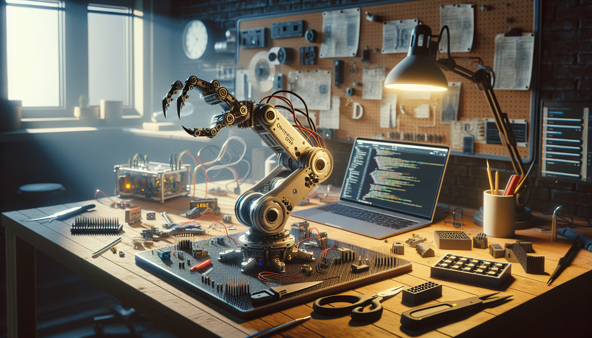

OpenClaw started as a simple question I could not stop thinking about: what would it look like to build a robotic system that was open, practical, hackable, and genuinely useful for developers and makers experimenting with AI in the physical world?
There are plenty of impressive robotics demos online. There are polished commercial robot arms, research-grade grippers, and endless proof-of-concept videos. But if you are a builder, you quickly run into a familiar problem: many projects are either too closed, too expensive, too fragile, or too difficult to reproduce. I wanted something different. I wanted a project that lived in the sweet spot between software and hardware, where someone could clone a repo, print parts, wire up components, and actually learn by building.
That project became OpenClaw.
In this post, I want to explain what OpenClaw is, what problem it tries to solve, and why I decided to build it in public on GitHub. This is not a polished founder story. It is the real behind-the-scenes version, builder to builder: the motivations, tradeoffs, lessons, and reasons I believe open source hardware matters even more in the age of AI.
At its core, OpenClaw is an open source robotic claw and hardware experimentation platform designed for developers, makers, and AI enthusiasts who want to work on real-world interaction systems. It is part mechanical build, part software project, and part learning platform.
The idea is straightforward: create a robotic claw system that can be replicated, modified, and extended by anyone with the right curiosity and a willingness to tinker. Instead of treating robotics as a black box, OpenClaw exposes the full stack. That includes the physical design, control logic, integration patterns, and the code that makes the system usable in actual projects.
For me, that openness is the point. OpenClaw is not just about a claw mechanism. It is about making robotics more approachable. It is about giving developers a bridge into hardware. It is about giving hardware builders a framework they can adapt. And it is about creating a place where AI can move beyond the browser and interact with the physical world.
Depending on how you use it, OpenClaw can be a prototype platform, a teaching tool, a GitHub build to remix, or a starting point for more advanced robotic workflows. That flexibility is intentional.
I built OpenClaw because I kept seeing the same gap over and over. On one side, there is software culture: fast iteration, open repositories, reproducible builds, and communities that improve projects together. On the other side, there is hardware culture: powerful, creative, hands-on, but often harder to document, reproduce, and share cleanly.
When AI entered the picture, that gap became even more obvious. Everyone wanted to connect intelligence to action. People were building agents, vision systems, automation tools, and control loops. But when it came time to attach those systems to something physical, the path got messy fast.
Some common issues were easy to spot:
I did not want OpenClaw to be another cool-looking prototype that only works on one bench, in one room, under one set of assumptions. I wanted to build something that could be followed, forked, improved, and understood. That meant thinking like a software developer while building a hardware system.
One of the most important decisions I made was to treat OpenClaw like an open GitHub build from day one. Not as an afterthought. Not as a marketing move. As the actual development model.
That changed everything.
Building in public forces clarity. If someone else might eventually clone your work, you have to document your assumptions. You have to name files sensibly. You have to explain wiring, revisions, failures, and edge cases. It makes the project better because it makes shortcuts visible.
GitHub also gives OpenClaw a natural home for iteration. Mechanical changes can be tracked. Firmware can evolve. software integrations can be tested and improved. Issues can become conversations. Pull requests can become real contributions. The repository becomes more than storage; it becomes the living memory of the build.
I also think open source matters for trust. In AI and robotics, people are rightly skeptical of opaque systems. If a project claims to be useful, people should be able to inspect how it works. If a design is meant to be educational, people should be able to study it. If it is meant to be extended, people should be able to fork it without begging for access.
That is why OpenClaw lives on GitHub. The source code, the design direction, and the evolution of the project should be visible.
OpenClaw was never about chasing maximum complexity. In fact, one of my goals was to resist the temptation to overengineer. Builders know this trap well: every project can absorb infinite features, but not every feature improves the project.
So I kept returning to a few principles:
That philosophy affects everything from part selection to repository layout. It also influences how I think about documentation. A lot of open hardware fails not because the hardware is bad, but because the path from zero to first successful build is too confusing. If someone cannot understand the system, they cannot contribute to it. So simplicity is not just an engineering preference here. It is a community strategy.
OpenClaw has already taught me a lot, and most of the lessons are not glamorous. They are the kinds of things every builder eventually learns: constraints are useful, documentation is part of the product, and the best designs usually emerge after a few frustrating iterations.
One lesson was that hardware honesty matters. A software bug can often be patched quickly. A hardware mistake can mean reprinting parts, reworking mounts, changing tolerances, or revisiting the entire assembly. That slows you down, but it also forces better thinking. It encourages you to make decisions that future builders can live with.
Another lesson was that AI becomes much more interesting when it has something real to control. There is a big difference between generating output and taking action in the world. Even a relatively simple robotic claw creates a new class of problems and possibilities: sensing, feedback, timing, grasping, repeatability, safety, and reliability. Suddenly, intelligence is not just about prediction. It is about embodiment.
I also learned that people are hungry for projects that connect disciplines. Developers want to touch hardware without feeling lost. Makers want cleaner software workflows. AI enthusiasts want systems that move beyond demos and into interaction. OpenClaw sits in that overlap, and that overlap is where some of the most exciting experimentation is happening right now.
I built OpenClaw for a specific kind of person: someone who likes building systems, not just consuming them.
If you are a developer, OpenClaw gives you a way to work with motors, control logic, and physical interfaces using a workflow that feels more like modern software development. If you are a maker, it gives you an open platform to modify, improve, and integrate into larger builds. If you are exploring AI, it gives you a practical way to connect models and automation logic to something tangible.
More broadly, OpenClaw is for people who want to learn in public. The repository is not just meant to be downloaded. It is meant to be explored, questioned, and built upon. I would much rather have a project that others can fork and improve than one that looks finished but teaches nothing.
That also means OpenClaw is intentionally unfinished in the best sense of the word. It is a foundation. A framework. A build that can evolve as new ideas, components, and use cases emerge.
We are in a moment where AI tools are becoming easier to access, but physical computing still feels fragmented for many people. That creates an opportunity. The next wave of interesting projects will not just be smarter software. They will be systems that combine software, hardware, sensing, and action in ways that are understandable and reproducible.
I think open source projects like OpenClaw matter because they lower the barrier to that future. They make experimentation more accessible. They create shared reference points. They let builders stand on each other’s work instead of starting from scratch every time.
And honestly, there is also a personal reason. I built OpenClaw because I wanted to make the kind of project I wish existed when I started looking for practical, open robotics builds. Something real. Something documented. Something a curious person could actually follow.
If that resonates with you, then OpenClaw is exactly the kind of project I hoped to create.
So what is OpenClaw? It is an open source robotic claw project, a GitHub build, and a platform for experimenting at the intersection of hardware, software, and AI. But more than that, it is an attempt to make robotics feel more approachable, more transparent, and more collaborative.
Why did I build it? Because I wanted a builder-first project that was open by design, practical to iterate on, and useful to people who want to move from ideas to working systems. I built it because open source hardware deserves the same care, visibility, and community energy that great software projects get. And I built it because the future of AI gets much more interesting when it can actually interact with the world.
If you are the kind of person who likes seeing how things are made, improving them, and sharing what you learn, then I think you will feel at home here.
Follow the OpenClaw build on GitHub and see the full source code.